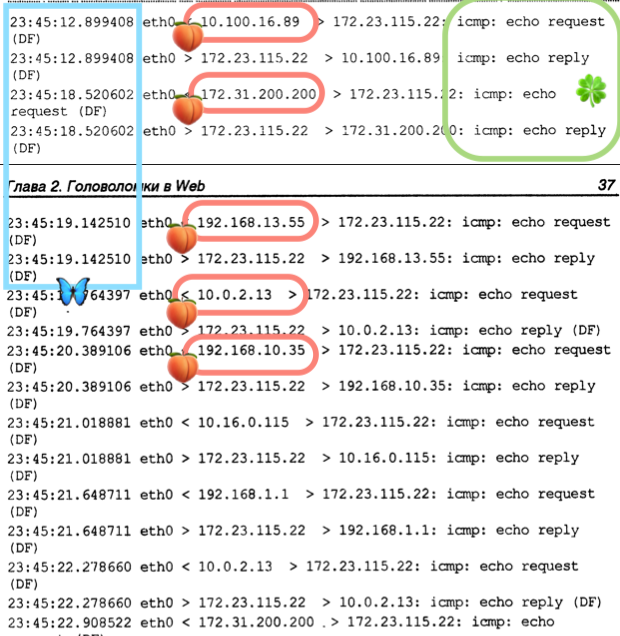
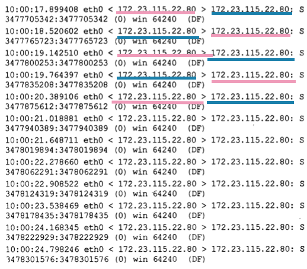
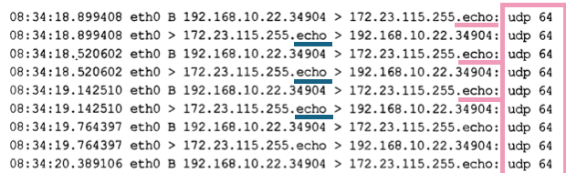
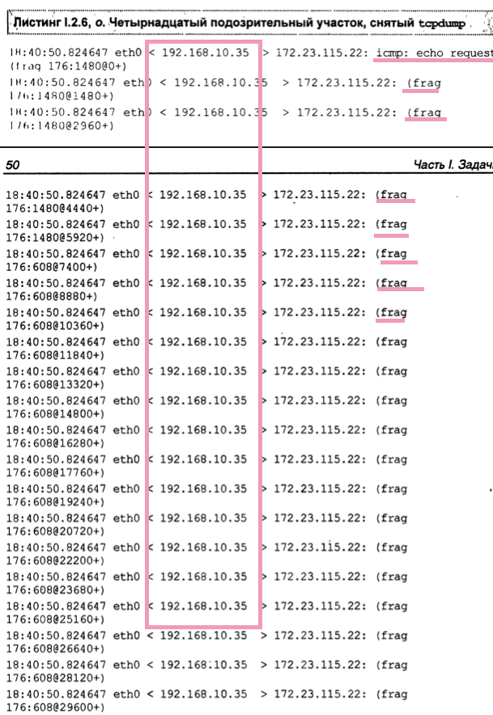
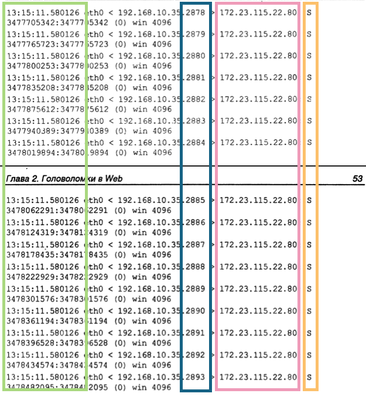
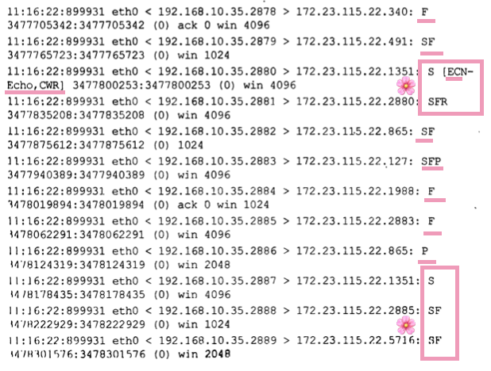

In this article, I will cover the main DoS techniques and how they look in the logs. I will also cover some main mitigation techniques.
ICMP Flooding (flood ping)
An example of tcpdump for DDoS flood ping:

Note different source IP addresses (indicative of an army of botnets performing a DDoS attack).
LAND
⛔️ Outdated.
The system sends packets are sent to itself in a loop.

Smurf
- Multiple ICMP requests from several machines (one is seen in the dump).
- Frequent requests
Bin the requests stands for Broadcast, which makes it different from thepingdump.

Fraggle
Similar to the Smurf attack but uses UDP instead.
Bin the requests stands for Broadcast, which makes it different from thepingdump.- Multiple UDP requests from several machines.
- Frequent.
- Usually, the destination port is
7(echo).

UDP-Storm or Echo-Chargen
- Port
19(chargen) > port7(echo) OR13(daytime) OR37(time). Instead ofechoone could use any other port that automatically replies to a request. - This creates a loop because both are configured to reply automatically.
❗️ This problem was eliminated on newer systems. Such ports as
echoortimedo not respond to requests sent from ports < 1024 or of a broadcast type.

Ping of Death
- Start with ICMP of a larger size.
- Following fragments of unusual size, some systems fail to reassemble and crash/hang.

SYN Flood Attack
- A lot of
SYNpackets are sent in a short period. - Same destination port.

Mitigation
SYN cookies
They are used to protect against SYN flood attacks. Shifts the responsibility of keeping the connection state info to the client.
Steps
Construct a unique sequence number.
time()>>6 max segm size Enc(k,t, serverIP, serverPort, clientIP, clientPort)
time()>>6- 5 bits.max_segm_size- 3 bits.Enc(k,t, serverIP, serverPort, clientIP, clientPort)- 24 bits.
Micro blocks
16 bytes of data instead of full connection objects allocated on the server.
RST cookies
Return an error for each client upon connection initiation. It generates and sends RST cookies along. If the client returns with the same cookie - proceed with the connection.
Stack Tweaking
Selectively drop the connection and timeout for individual connections.
Weird Scan
SYNandFINflag together (not normal). Many additional flags have weird orders of requests, likeSYNfollowed bySYN+FINetc.- It Could be used to determine the OS type + circumvent the port scanning rules.

General Mitigation Techniques
- Traffic filtering (block ICMP/UDP flood, ACLs etc).
- Rate limiting for a given IP.
- IDP/IPS.
- Load Balancing.
- Traffic analysis and anomaly detection.
- Cloud-based protection services.